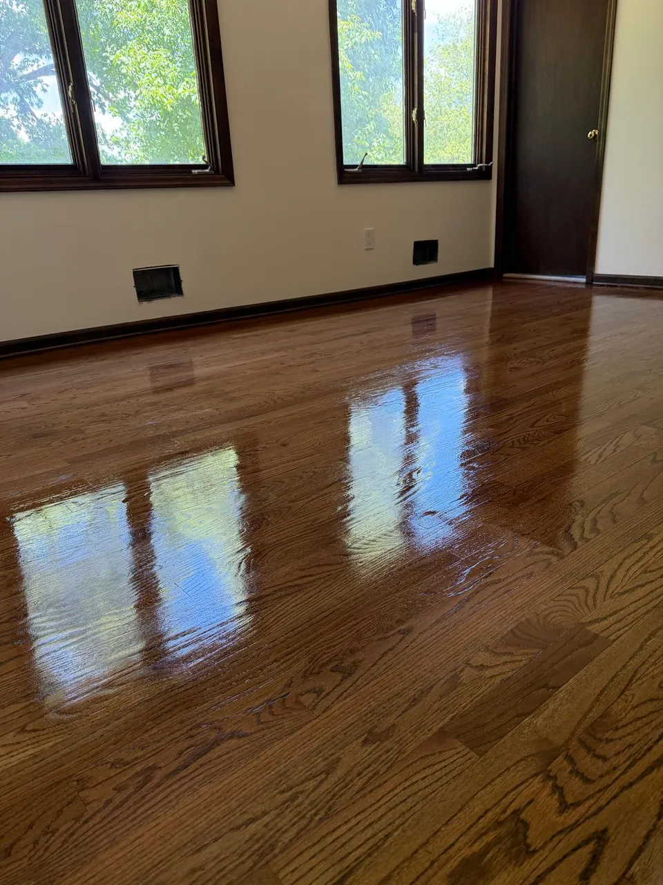
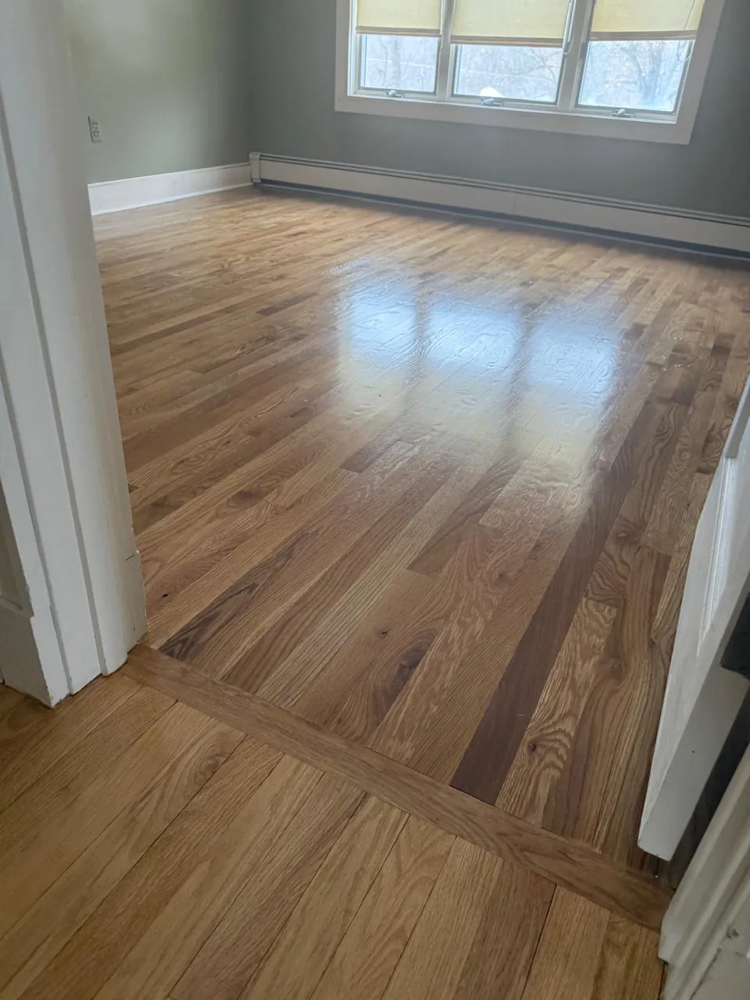

In this article
Quick answer
Yes. Light scratches that only affect the finish can often be fixed by buffing, recoating or applying a new finish layer, sometimes in a single day. Deeper scratches that reach the wood are removed by sanding and refinishing, which usually takes a few days, and most floors can be walked on within 24 hours.
Scratched hardwood floors are one of the most common issues homeowners face. Whether it's from pets, moving furniture, daily foot traffic, or just years of use, scratches can make even a high-quality floor look worn and outdated.
The good news is: in most cases, yes, scratched hardwood floors can absolutely be fixed. The key is understanding the level of damage and choosing the right solution.
What causes scratches on hardwood floors?
Before fixing the problem, it helps to understand what's causing it.
Most scratches come from everyday use. Dragging furniture without protection, dirt and debris stuck under shoes, pet nails, and even normal foot traffic can slowly wear down the surface over time.
In many homes, especially busy households with kids or pets, this kind of wear is unavoidable. The important thing is knowing that damage doesn't always mean replacement.
Light scratches vs. deep scratches
Not all scratches are the same, and the solution depends on how deep they go.
Light scratches usually affect only the top protective layer of the floor (the finish). These are more surface-level marks that can often be corrected without major work.
Deeper scratches go beyond the finish and into the wood itself. These require more advanced repair methods, but they can still be fixed in most cases.
ALight scratch: in the finish onlyUsually fixed by buffing and a fresh coat (recoat).
BDeep scratch: into the woodSanded below the scratch (dashed line), then refinished.
Knowing the difference is what helps determine the right approach.
Can light scratches be repaired?
Yes, and usually with minimal work.
Light scratches can often be improved with simple solutions like buffing, recoating, or applying a new finish layer. This process restores the shine and helps blend the scratches into the rest of the floor.
In many cases, homeowners are surprised at how much better their floors look after a professional touch-up. It's a fast and cost-effective way to bring back the original appearance.
What about deep scratches?
Deeper scratches require a more complete solution, but they are still fixable.
When scratches penetrate the wood, the most effective method is sanding and refinishing. This process removes a thin layer from the surface, eliminating the scratches and restoring a smooth, even finish.

After sanding, a new protective coating is applied, leaving the floor looking like new again.
This is one of the most common services Costa Flooring offers, especially for homeowners dealing with older or heavily worn hardwood floors.
When refinishing is the best option
If your floors have multiple scratches, discoloration, or an overall worn look, refinishing is usually the best choice.
Instead of trying to fix individual marks, refinishing addresses the entire surface at once. It not only removes scratches but also restores color, shine, and protection.
Many homeowners choose this option when they want a full refresh without replacing the floor. Here's a closer look at how hardwood floor refinishing restores old floors.
How long does the process take?
One of the most common questions is about timing.
For light repairs, the process can be completed quickly, sometimes in just a day. Depending on the area's size, full sanding and refinishing usually takes a few days.
After the process, most floors can be walked on within 24 hours, with full use shortly after. This makes it a practical solution even for busy homes.
Can all hardwood floors be repaired?
In most cases, yes.
Solid hardwood floors can typically be sanded and refinished multiple times over their lifespan. This makes them one of the most durable and long-lasting flooring options available.
Even engineered wood can often be repaired, depending on the thickness of the top layer.

A professional inspection helps determine the best approach based on your specific floor.
Why professional work makes a difference
Fixing scratched hardwood floors is not just about sanding or applying a new coat. The preparation, equipment, and technique all play a major role in the final result.
A professional team ensures the surface is properly treated, the finish is even, and the floor looks consistent throughout the space.
With over 10 years of experience, Costa Flooring focuses on delivering clean, high-quality results, fast estimates, and reliable service.
Final thoughts
Scratched hardwood floors don't mean you need to replace everything. In many cases, the damage can be repaired quickly and effectively.
Whether it's light surface scratches or more serious damage, there are proven solutions that can restore your floors and bring back their original look.
If your floors are starting to show signs of wear, fixing them now can save you money and extend their lifespan for years to come. Request a free estimate and we'll tell you which fix your floor needs.